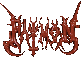

9.ruh Paimon'dur. Lucifer'e sonsuz sadakati olan buyuk bir kraldir. Bir
hecinin (tek horguclu deve) onunde, basinda zafer taciyla otururken gorulur.
Onun onunde bazi adamlari cesitli enstrumanlarla yururler. Buyuk ve korkunc
bir sesi vardir. Onun konusmalarini buyuculer bile anlayamaz, sadece
sezinleyebilirler. Bu ruh, butun sanatlari, bilimleri ve gizli seyleri ogretebilir;
dunyanin ne oldugunu, sularin neyin uzerinde durdugunu, zekanin ne ve nerede oldugunu
ve isteklerin nerede baslayacagini bilir. Kendisine seref payesi verilmistir.
O istedigi adami buyucuye cevirebilir. Iyi bilgilere de sahiptir. Hukmu
altinda ruhlarin 200 lejyonu vardir. Bunlarin bazilari melekler ordusu,
bazilari hukumdarlardir. Simdi en kotu ruh Paimon yalnizdir. Labal ve
Abalim adlarindaki iki kral ona katilmistir. Onlarinda altinda bir kisim
hukumdarlar ve 25 lejyon vardir. Bu ruhlar ona buyucu engellemedigi surece
baglidirlar.